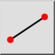
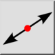
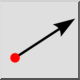

Herramientas de línea
Barra de herramientas / Icono:

Accesos directos: W, L
Comandos: linemenu
Barra de herramientas / Icono:

Accesos directos: W, L
Comandos: linemenu
Las líneas son objetos rectos definidos por dos puntos. Las herramientas de línea ofrecen varias maneras de construir una línea, por ejemplo desde un punto inicial hasta un punto final, paralelamente a un objeto existente, tangencialmente a círculos o arcos u ortogonalmente a otra línea.
La mayoría de las herramientas de línea le permiten elegir el tipo de línea que desea crear en la barra de herramientas de opciones. Los tipos de línea disponibles son:


